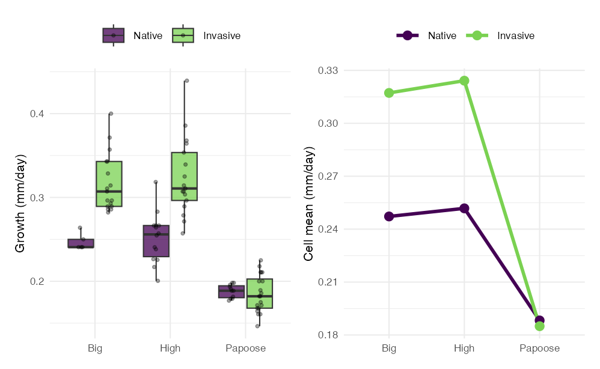
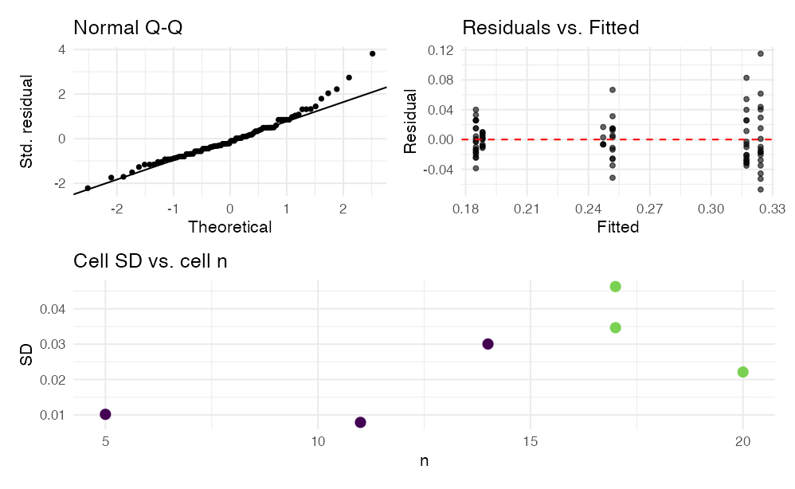

The same machinery on data that fights back
Last session — factorial ANOVA, on penguin body mass:
effectsizeToday is the same analysis again, on a dataset that does not cooperate.
Important
Why do it twice?
The penguin design is nearly proportional — 73/73, 34/34, 58/61. So raw means ≈ EMMs, and Type I / II / III barely move.
Everything you were told mattered, did not visibly matter. Today it does.
Tip
🖐 Nothing new is being taught
No new test, no new function. The same five commands, on data where each one earns its keep.
| penguins | crayfish | |
|---|---|---|
| Cell sizes | 34–73, nearly proportional | 5–20 |
| Type I vs. Type III | barely move; interaction identical | lake F 121 → 90 |
| Interaction | F = 8.8, statistical | F = 12.7, biological |
| Assumptions | pass | both fail |
| Confounds | none worth saying | one you must disclose |
Same model. Same five functions. Four conclusions you could not have reached last time.
Note
📖 What you are practising
Anova(type = 3) completely, not just the p columnsummary() line by line, and finding the missing rowsemmeans four different ways on one modelSargent & Lodge (2014), Evolutionary Applications.
Young-of-year rusty crayfish (Orconectes rusticus) were taken from
and grown in enclosures in three northern Wisconsin lakes — Big, High and Papoose — in summer 2011.
The question. Have invasive-range populations evolved faster growth? A common-garden design answers it: put both origins in the same environment and the difference that remains is not environmental.
| Variable | What it is |
|---|---|
range |
Native / Invasive — factor A, 2 levels |
lake |
Big / High / Papoose — factor B, 3 levels |
growth_per_day |
mm per day — the response |
initial_length |
starting length, mm |
days |
length of the deployment |
avg_temp |
mean water temperature, °C |
A 2 × 3 factorial: six cells, 84 crayfish.
Every cell is filled, so every effect is estimable. But the smallest cell is 5 and the largest is 20 — a four-fold range.
Important
This is not “a bit” unbalanced
Balance is not just equal n. A design is proportional when the cell counts follow the row and column totals. Check Native: 5 / 14 / 11 against Invasive 17 / 17 / 20. Big is 23% of the Native crayfish and 31% of the Invasive ones.
Non-proportional imbalance is exactly the condition under which the three SS types stop agreeing, and under which a raw marginal mean stops estimating what you think.
Tip
🖐 Why it happened
Field enclosures. Animals escape, enclosures fail, crayfish die. This is what real data looks like — the penguin balance was the unusual thing.
## range lake n mean sd
## 1 Native Big 5 0.2472 0.0102
## 2 Native High 14 0.2518 0.0300
## 3 Native Papoose 11 0.1882 0.0079
## 4 Invasive Big 17 0.3172 0.0347
## 5 Invasive High 17 0.3242 0.0463
## 6 Invasive Papoose 20 0.1850 0.0221Read down the pairs:
Important
That is an interaction, in words
The invasive growth advantage is large and almost identical in two lakes, and gone in the third.
“Invasive crayfish grow faster” is true in Big and High and false in Papoose. A main effect alone would have averaged those into a single misleading number.

Note
📖 The two lines converge
Parallel lines = no interaction. These are parallel from Big to High and then collapse onto each other at Papoose.
The interaction is not a sign flip — nobody overtakes anybody. It is the disappearance of a difference. That is the most common shape an ecological interaction takes, and the easiest one to miss if you only read p-values.
Tip
🖐 Also notice the spread
The Invasive/High box is tall; the Native/Papoose box is tiny. Hold that thought until Part 7.
## range days mean_temp n
## 1 Native 106, 108 22.03 30
## 2 Invasive 70 23.85 54days is perfectly confounded with range: every Native crayfish was in the water 106–108 days, every Invasive one exactly 70. And the two groups therefore experienced water ~1.8 °C apart.
Important
⚠️ What this does and does not break
The response is growth per day, which removes the duration itself. It does not remove the fact that the two origins were grown in different parts of the summer, at different temperatures, at different sizes-for-age.
So range is not a clean contrast of genotype. It is a contrast of genotype-plus-deployment-window.
Tip
🖐 Say it, do not hide it
We still fit the model — it is the right model for the design we have. But this belongs in the methods and the discussion, not in a footnote.
The lake effect and the interaction are unaffected: both origins were in all three lakes.
Anova(type = 3) Line by Lineoptions(contrasts = c("contr.sum",
"contr.poly"))
cray_model <- lm(
growth_per_day ~ range * lake,
data = cray_df)
Anova(cray_model, type = 3)
## Anova Table (Type III tests)
##
## Response: growth_per_day
## Sum Sq Df F value Pr(>F)
## (Intercept) 4.3228 1 4460.871 < 0.00000000000000022 ***
## range 0.0365 1 37.695 0.00000003234 ***
## lake 0.1741 2 89.835 < 0.00000000000000022 ***
## range:lake 0.0246 2 12.704 0.00001674553 ***
## Residuals 0.0756 78
## ---
## Signif. codes: 0 '***' 0.001 '**' 0.01 '*' 0.05 '.' 0.1 ' ' 1range * lake expands to range + lake + range:lake — both main effects and the interaction.
Important
⚠️ The options() line is not decoration
Type III SS are only interpretable when the factors are coded with sum-to-zero contrasts. Under R’s default contr.treatment, the row labelled “Type III” tests something you did not intend.
The contrasts are baked in when lm() runs, so the order is always set → fit → test. Changing the option afterwards does nothing.
| Row | Df | What the F is a ratio of | What it tests | Verdict |
|---|---|---|---|---|
(Intercept) |
1 | \(MS_{intercept}/MS_{resid}\) | is the grand mean of the six cell means zero? | F = 4461 — true and useless; growth is obviously not zero |
range |
1 | \(MS_{range}/MS_{resid}\) | averaged over lakes, do Native and Invasive differ? | F1,78 = 37.70, p < 0.0001 |
lake |
2 | \(MS_{lake}/MS_{resid}\) | averaged over ranges, do the three lakes differ? | F2,78 = 89.84, p < 0.0001 |
range:lake |
2 | \(MS_{range:lake}/MS_{resid}\) | is the range effect the same in every lake? | F2,78 = 12.70, p = 0.000017 |
Residuals |
78 | — | 84 crayfish − 6 cell means = 78 | \(SS\) = 0.0756, \(MS\) = 0.000969 |
Note
✅ Where the df come from
range has 2 levels → 1 df. lake has 3 → 2 df. The interaction is their product, 1 × 2 = 2 df. Model df 1 + 2 + 2 = 5, plus the intercept = 6 = the number of cells. Residual df = 84 − 6 = 78. The df are a check on whether R fit the design you think it did.
Important
The reading order is not top-to-bottom
range:lake first. p = 0.000017 → significant.“Invasive crayfish grow 0.046 mm/day faster” is the range row. It is a true statement about an average that describes no lake: the real numbers are +0.070, +0.072 and −0.003.
Warning
⚠️ But do not delete the main effects
Report them. They are part of the model, they consume df, and a reader needs them to see the decomposition.
Report them and say that the interaction makes them conditional. What you must not do is report the range row alone as the finding.
Tip
🖐 If the interaction had been n.s.
Then the main effects are the story, and you read the table top-to-bottom like a one-way ANOVA done twice. Many factorial papers are that case. This one is not.
summary(model) Line by Linesummary(cray_model)
##
## Call:
## lm(formula = growth_per_day ~ range * lake, data = cray_df)
##
## Residuals:
## Min 1Q Median 3Q Max
## -0.067059 -0.020593 -0.004712 0.014782 0.115141
##
## Coefficients:
## Estimate Std. Error t value Pr(>|t|)
## (Intercept) 0.252269 0.003777 66.790 < 0.0000000000000002 ***
## range1 -0.023190 0.003777 -6.140 0.00000003234 ***
## lake1 0.029942 0.005930 5.049 0.00000284101 ***
## lake2 0.035707 0.004978 7.172 0.00000000037 ***
## range1:lake1 -0.011822 0.005930 -1.994 0.0497 *
## range1:lake2 -0.012993 0.004978 -2.610 0.0109 *
## ---
## Signif. codes: 0 '***' 0.001 '**' 0.01 '*' 0.05 '.' 0.1 ' ' 1
##
## Residual standard error: 0.03113 on 78 degrees of freedom
## Multiple R-squared: 0.7958, Adjusted R-squared: 0.7827
## F-statistic: 60.8 on 5 and 78 DF, p-value: < 0.00000000000000022The design has six cells. The table has six rows. Count the names you would have expected:
| Expected | Present? |
|---|---|
(Intercept) |
✅ |
range1 (Native) |
✅ |
range2 (Invasive) |
❌ missing |
lake1 (Big), lake2 (High) |
✅ |
lake3 (Papoose) |
❌ missing |
range1:lake1, range1:lake2 |
✅ |
range1:lake3, range2:lake* |
❌ missing |
Four cells’ worth of names are gone. Nothing was dropped and nothing failed.
Important
They are not missing — they are implied
contr.sum imposes one rule: every set of effects sums to zero.
\[\alpha_{Native} + \alpha_{Invasive} = 0\] \[\beta_{Big} + \beta_{High} + \beta_{Papoose} = 0\]
So once R has told you range1 = −0.0232, the Invasive effect is forced to be +0.0232. Printing it would be printing the same number twice.
Six cells can only support six free numbers. A 2-level factor spends 1, a 3-level factor spends 2, the interaction spends 1 × 2 = 2, the intercept spends 1. Total: 6. The design is exactly used up.
b <- coef(cray_model)
c(range_Native = b[["range1"]],
range_Invasive = -b[["range1"]],
lake_Big = b[["lake1"]],
lake_High = b[["lake2"]],
lake_Papoose = -(b[["lake1"]] +
b[["lake2"]])) %>%
round(5)
## range_Native range_Invasive lake_Big lake_High lake_Papoose
## -0.02319 0.02319 0.02994 0.03571 -0.06565Papoose is −0.0656 — by far the biggest lake effect, and R never printed it.
Warning
⚠️ The trap this sets
A reader skimming summary() sees lake1 and lake2 both positive and significant and concludes “lakes raise growth.”
The unprinted level is the one doing the work. Under contr.sum the omitted level is always the one you most need to compute, because it carries the negative of everything else.
Tip
🖐 The same logic for the interaction
range1:lake3 = −(range1:lake1 + range1:lake2) = +0.0248, and every range2: term is the negative of its range1: partner.
Important
0.252269, not 0.255181
Under contr.sum the intercept is the unweighted mean of the six cell means — every cell counts once, whatever its n.
The raw grand mean weights each cell by its n, so it is pulled toward the big Invasive cells.
This is the same idea as an estimated marginal mean, sitting in the intercept row. On a balanced design the two are identical, which is why you never noticed it with the penguins.
Invasive crayfish in Papoose Lake — every term is a negative, because Invasive is level 2 and Papoose is level 3:
\[\hat{y} = \mu + \alpha_{Inv} + \beta_{Pap} + (\alpha\beta)_{Inv,Pap}\]
by_hand <-
b[["(Intercept)"]] -
b[["range1"]] -
b[["lake1"]] - b[["lake2"]] +
b[["range1:lake1"]] +
b[["range1:lake2"]]
emm_cell <- as.data.frame(
emmeans(cray_model, ~ range * lake)) %>%
filter(range == "Invasive",
lake == "Papoose")
round(c(by_hand = by_hand,
emmeans = emm_cell$emmean,
observed = cray_cells$mean[6]), 6)
## by_hand emmeans observed
## 0.184995 0.184995 0.184995Important
All three are 0.184995
The hand calculation, emmeans, and the observed cell mean agree exactly.
That is the payoff of the whole part: summary() is not a wall of numbers, it is a complete and exact recipe for all six cell means — once you know that the missing levels are the negative sums.
Note
📖 Why they agree exactly here
A model with both main effects and the interaction has one parameter per cell. It is saturated: it reproduces the cell means perfectly. Drop the interaction and it would not.
Anova() or summary()? Both, for Different Jobssummary(model) |
Anova(model, type = 3) |
|
|---|---|---|
| Unit of output | one row per parameter | one row per term |
lake appears as |
2 rows, 2 t-tests | 1 row, 1 F-test on 2 df |
| Answers | “how big is this particular effect?” | “does this factor matter at all?” |
| Multi-level factors | ✅ gives you the sizes | ❌ hides them |
| Overall test of a factor | ❌ — two t-tests are not a test of lake |
✅ |
| Interaction | 2 separate rows | 1 honest 2-df test |
| \(R^2\), residual SE | ✅ | ❌ |
Important
✅ The rule
Never report a multi-level factor’s significance from summary(). Two significant t-tests out of two is not a 2-df F-test, and it is not corrected for anything.
Anova() to decide whether a term matters. summary() to see how big the pieces are. emmeans() to say anything a biologist can read.
t1 <- anova(cray_model) # Type I
t2 <- Anova(cray_model, type = 2) # Type II
t3 <- Anova(cray_model, type = 3) # Type III
tibble(
term = c("range", "lake", "range:lake"),
`Type I` = round(t1[1:3, "F value"], 2),
`Type II` = round(t2[1:3, "F value"], 2),
`Type III` = round(t3[2:4, "F value"], 2)
) %>% as.data.frame()
## term Type I Type II Type III
## 1 range 36.30 35.71 37.70
## 2 lake 121.15 121.15 89.83
## 3 range:lake 12.70 12.70 12.70Note the row offset: Anova() puts (Intercept) in row 1 and anova() does not.
Important
Finally, numbers that move
lake’s F drops from 121 to 90 — a quarter of it was never lake’s to claim. On the penguins the same comparison moved from 758 to 747 and the interaction did not budge at all.
The interaction is identical in all three. That is always true: the highest-order term is entered last whatever the scheme, so there is nothing left to adjust for.
Tip
🖐 Why Type II = Type I for lake here
Type I entered range then lake, so lake was already adjusted for range. Type II adjusts each main effect for the other. Same thing — for the second term entered.
Same model, two different sums of squares for range — because anova() credits each term only with what the terms above it left behind.
Important
What each type adjusts for
Warning
⚠️ anova() is Type I
anova() is base R and sequential; car::Anova(type = 3) is a different function. Typing anova() on an unbalanced design and calling it Type III reports the wrong table.
Important
Report Type III here, and say so.
Reasons, in order:
emmeans is consistent with.And the honest caveat. Type III main effects in the presence of a real interaction are tests of averaged-over effects that may describe no actual group. We report them, then go to simple effects.
Note
📖 When Type II is the better answer
If the interaction is not significant and you are willing to say the effects are additive, Type II is more powerful — it does not waste adjustment on a term you have decided is noise.
Some statisticians argue for always dropping a non-significant interaction and refitting. That is defensible. Deciding after seeing the p-value is less so.
Tip
🖐 On a balanced design
All three are identical, and the whole argument evaporates. That is the real reason to balance a design when you can.
emmeans, Four Ways## range raw_mean
## 1 Native 0.2277
## 2 Invasive 0.2704EMM 0.2287 and 0.2751 → difference 0.0464 Raw 0.2284 and 0.2697 → difference 0.0413
Note
📖 The raw mean understates it by 12%
The raw Invasive mean is pulled down because 20 of the 54 Invasive crayfish were in Papoose, the worst lake. The EMM averages the three lakes equally, so it is not contaminated by where the animals happened to survive.
Milder than the penguin toy — but in the same direction, for the same reason.
Warning
⚠️ Read the NOTE R prints
“Results may be misleading due to involvement in interactions.” That is not boilerplate. It is emmeans telling you this number describes no lake.
range Within Each Lakepairs(emmeans(cray_model, ~ range | lake))
## lake = Big:
## contrast estimate SE df t.ratio p.value
## Native - Invasive -0.07002 0.0158 78 -4.421 <0.0001
##
## lake = High:
## contrast estimate SE df t.ratio p.value
## Native - Invasive -0.07237 0.0112 78 -6.441 <0.0001
##
## lake = Papoose:
## contrast estimate SE df t.ratio p.value
## Native - Invasive 0.00325 0.0117 78 0.278 0.7816The | means “separately within each level of”. This is the analysis the significant interaction sent you to.
Important
This is the actual result of the study
Two lakes show a large invasive advantage; the third shows nothing.
Write this, not the main effect.
Tip
🖐 No multiplicity adjustment appears
Each lake has only one comparison (2 levels → 1 pair), so there is nothing to adjust within a lake. Across the three families, emmeans leaves it to you.
lake Within Each Rangepairs(emmeans(cray_model, ~ lake | range))
## range = Native:
## contrast estimate SE df t.ratio p.value
## Big - High -0.00459 0.0162 78 -0.283 0.9568
## Big - Papoose 0.05895 0.0168 78 3.511 0.0021
## High - Papoose 0.06355 0.0125 78 5.067 <0.0001
##
## range = Invasive:
## contrast estimate SE df t.ratio p.value
## Big - High -0.00694 0.0107 78 -0.650 0.7932
## Big - Papoose 0.13223 0.0103 78 12.876 <0.0001
## High - Papoose 0.13916 0.0103 78 13.552 <0.0001
##
## P value adjustment: tukey method for comparing a family of 3 estimatesImportant
A difference of magnitude, not of sign
Papoose is worse than Big and High in both ranges — lake did not stop mattering. The Papoose deficit is 0.059 / 0.064 for Native and 0.132 / 0.139 for Invasive: more than twice as costly. Big vs. High is n.s. in both (p = 0.96, 0.79).
Note
📖 Same 2 df, two readings
Way 2: “the invasive advantage disappears in Papoose.” Way 3: “Papoose penalises invasive crayfish twice as hard.”
Both correct. Pick the one that answers your question. Tukey does appear here — 3 levels give 3 pairs.
contrast(emmeans(cray_model, ~ range * lake),
interaction = c("pairwise", "pairwise"))
## range_pairwise lake_pairwise estimate SE df t.ratio p.value
## Native - Invasive Big - High 0.00234 0.0194 78 0.121 0.9043
## Native - Invasive Big - Papoose -0.07327 0.0197 78 -3.723 0.0004
## Native - Invasive High - Papoose -0.07562 0.0162 78 -4.665 <0.0001A difference of differences: is the range gap in lake X different from the range gap in lake Y?
Important
This localises the interaction
Big vs. High 0.0023, p = 0.90; Big vs. Papoose −0.073, p = 0.0004; High vs. Papoose −0.076, p < 0.0001.
The 2-df interaction is entirely Papoose. Anova() said an interaction exists; this says which cells it lives in — the only one of the four ways that does.
Tip
🖐 The sentence to report
“The interaction was driven by Papoose Lake, where the invasive advantage was 0.073–0.076 mm/day smaller than in the other two lakes (both p < 0.001), which did not differ (p = 0.90).”
emmip()Note
📖 Why emmip and not your own ggplot
It plots the model’s means with intervals from the model’s standard errors. A ggplot of raw cell means plots something slightly different — on an unbalanced design those are not the same numbers.
For the final figure in a paper, build it yourself from as.data.frame(emmeans(...)) so you control every element — but check it against emmip() first.
Tip
🖐 Read the overlap, not the lines
At Papoose the two intervals sit on top of each other. At Big and High they do not come close. That is the interaction, drawn.
A planned comparison is a specific contrast you commit to before seeing the data, because theory demands it. It costs no multiplicity penalty, because you did not go looking.
This design cannot support one:
range has 2 levels. There is only one possible comparison, so “planned” and “post-hoc” are the same test.lake has 3 levels but they are unordered nuisance environments. There is no a priori reason to pit Big against High rather than against Papoose.Note
📖 Where they will fit
You need a factor whose levels have structure — a dose gradient, a control-vs-all-treatments comparison, an ordered sequence.
The urchin density gradient (0 / 33 / 66 / 100%) is the natural case: a linear trend contrast is a single df that asks the real biological question, instead of six pairwise tests that do not.
Tip
🖐 Preview of the syntax
contrast(emm, list(linear = c(-3, -1, 1, 3))), with the weights summing to zero. We will build these properly later.
eta_squared(Anova(cray_model, type = 3))
## # Effect Size for ANOVA (Type III)
##
## Parameter | Eta2 (partial) | 95% CI
## ------------------------------------------
## range | 0.33 | [0.19, 1.00]
## lake | 0.70 | [0.60, 1.00]
## range:lake | 0.25 | [0.11, 1.00]
##
## - One-sided CIs: upper bound fixed at [1.00].| Term | partial η² | label |
|---|---|---|
range |
0.33 | large |
lake |
0.70 | large |
range:lake |
0.25 | large |
Important
lake is the biggest effect in the study
Partial η² = 0.70 for a factor nobody was interested in. The experimental factor, range, gets 0.33.
Model \(R^2\) = 0.80. For field ecology that is extraordinary — and most of it is “which lake did this animal happen to live in.”
Tip
🖐 This is the number for the next study
If lake carries 0.70 of the explainable variation, a design with more lakes beats one with more crayfish per lake. The p-values could not have told you that.

Warning
⚠️ Both assumptions fail
shapiro.test on the residuals gives p = 0.0043; leveneTest on the six cells gives p = 0.013.
The Q-Q plot shows why: one crayfish grew 9.25 → 40 mm in 70 days, a standardised residual of 3.8.
And cell SDs run 0.008 (Native/Papoose) to 0.046 (Invasive/High) — a six-fold spread, with the biggest variance in the fastest-growing cells.
Tip
🖐 Positive mean-variance relationship
Spread rising with the mean is the signature of a response that wants a log scale. Next slide.
Three independent ways to ask. The interaction F, each way:
## approach interaction_F
## 1 as fitted 12.70
## 2 log(growth) 13.24
## 3 outlier dropped 13.45
## 4 HC3 robust SEs 27.58And the log model’s assumptions: Shapiro p = 0.37 (was 0.004), Levene p = 0.053 (was 0.013).
Important
✅ Every route gives the same conclusion
Three main effects and an interaction, all strongly significant, with the interaction F between 12.7 and 27.6.
The log transform fixes normality outright and nearly fixes homogeneity, and changes nothing about what you conclude.
Note
📖 What to actually report
Report the log-scale model — it is the one whose assumptions hold — and state that the untransformed analysis gave the same conclusions.
That sentence is worth more than a passed Shapiro test. “The assumption failed, here are three checks, the answer is stable” is what robustness means.
Note
How to report this result
“Daily growth rate differed between native and invasive crayfish (two-way ANOVA on log-transformed growth, Type III SS; F1,78 = 34.2, p < 0.001) and among lakes (F2,78 = 124.7, p < 0.001), and the two factors interacted (F2,78 = 13.2, p < 0.001; partial η² = 0.25).
Invasive crayfish grew faster than native crayfish in Big (+0.070 mm d⁻¹, p < 0.001) and High (+0.072, p < 0.001) lakes but not in Papoose (+0.003, p = 0.78); the interaction contrast confirmed Papoose differed from both other lakes (p ≤ 0.0004) while Big and High did not differ (p = 0.90).
Native and invasive animals were deployed in different windows (106–108 vs. 70 days, mean temperature 22.0 vs. 23.8 °C), so the range effect is not a clean genotypic contrast.”
Important
✅ Four things that must be in it
Warning
⚠️ What a weaker version would say
“Invasive crayfish grew significantly faster than native crayfish (p < 0.001).” True, and it hides that this is false in one of the three lakes studied.
Anova(type = 3) row by row — every df accounted for, and the interaction row read firstsummary() line by line and found the four missing coefficients, then reconstructed a cell mean by hand to 6 decimalslake’s F fall from 121 (Type I) to 90 (Type III), and Type I change when you reorder the formulaemmeans four ways — marginal, simple effects both directions, and the interaction contrast that localised the effect to PapooseImportant
✅ The one idea to keep
A significant interaction demotes every main effect to a conditional statement. The table tells you an interaction exists; only the simple effects and the interaction contrast tell you what it is.
Here: the invasive crayfish growth advantage is real, large, and absent in one of the three lakes tested. No single p-value in the ANOVA table says that.
Note
📖 Up next
What happens when the thing on the right-hand side is continuous — and when lake would be better as a random effect than a fixed one.
Note
📖 On the dataset
A real common-garden experiment, not a textbook example — so there is no chapter to look up and no clean answer in the back. The textbook PDFs are on Canvas; the crayfish paper is worth reading for the methods section alone.
Tip
🖐 Worth your time
Hector, A., von Felten, S., & Schmid, B. (2010). Analysis of variance with unbalanced data: an update for ecology & evolution. Journal of Animal Ecology, 79, 308–316. Twelve pages, and it is about exactly Part 5.